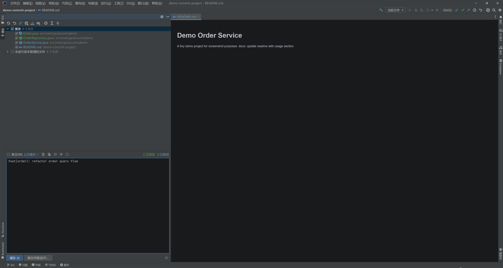

根据变更生成提交信息
选择 Git 变更后，插件可以调用配置好的 LLM 生成提交信息草稿，适合快速处理上下文较多的修改。

What it does
选择 Git 变更后，插件可以调用配置好的 LLM 生成提交信息草稿，适合快速处理上下文较多的修改。
已经写好的提交信息可以被重写为当前模板格式，减少风格不一致和字段缺失。
通过 type、scope、subject、body、BREAKING CHANGE、Closes、skip ci 等字段控制最终输出，Smart Echo 还能把已有草稿解析回结构化字段。
提交模板由 Apache Velocity 驱动，支持多模板档案与全局/项目默认；LLM 生成行为还可以通过可复用的提示词档案调整。
Daily workflow
在 IntelliJ 的 Commit 工具窗口里选择本次要提交的文件或 diff。
使用 Generate、Generate with Context、Format、Create 四个动作完成不同程度的自动化。
插件把结构化字段渲染为团队约定的最终 Git commit message。
Screenshots
下面按实际使用顺序汇总插件界面。图片不是单独卡片，放在说明文字中作为文章插图；点击任意图片可以放大查看。
在 VCS Commit Message 区域中，插件会提供生成、附加信息生成、格式化和手动创建四个入口。生成和格式化动作适合先拿到可用草稿，再由结构化编辑器进行人工确认。
需要补充上下文时，可以通过附加信息动作告诉 LLM 本次生成的额外要求，例如要关闭的 issue、跳过 CI，或者说明修复了什么 Bug。
手动创建动作会打开结构化编辑器：更改类型、范围、简短描述、详细描述、重大变更、关闭问题和 Skip CI 都有独立字段，提交时按模板渲染成最终文本。
通用设置用于控制提交类型展示方式、隐藏字段、Skip CI 默认值，以及四个提交动作是否显示在提交面板中。
提交模板由 Apache Velocity 渲染，支持多模板档案与全局/项目默认；提交类型列表可以按团队规范维护。模板决定最终文本结构，类型列表决定编辑器中可以选择的语义分类。
提示词设置页可以创建、重命名、编辑和删除可复用的提示词，并为全局与当前项目分别指定默认值。项目提示词优先于全局提示词。
LLM 设置页集中配置默认模型、接口协议、Base URL、API Key、温度、回复语言、最大差异长度和思考等级。每个模型档案可以选择自己的协议与思考等级。
Guide
在 IDE 中打开 File → Settings → Plugins → Marketplace，搜索并安装 Git Commit Message Helper。
进入 File → Settings → Git 提交消息助手，配置提交模板、提示词、类型和 LLM。
选择变更后点击 Generate、Generate with Context、Format 或 Create，确认结果后提交。
LLM compatibility
这是“OpenAI 兼容模式”，适用于实现了 Chat Completions 协议的服务，不只限于 OpenAI 官方。Base URL 有两种写法：
https://api.openai.com/v1 这类服务根路径，插件会自动补上 /chat/completions。https://example.com/v1/chat/completions，插件会直接使用这个地址。Authorization: Bearer <API Key>，请求体包含 model、temperature、stream、messages。这是 OpenAI Responses 协议模式，适用于官方及兼容 Responses API 的服务。它使用 /responses 端点，请求体结构与 Chat Completions 不同。
https://api.openai.com/v1，插件会自动请求 /responses。Authorization: Bearer <API Key>。这是 Anthropic 原生 Messages API 模式，适用于 Claude 官方接口。它不是 OpenAI 兼容转接，Header 和请求体结构都按 Anthropic 协议组织。
https://api.anthropic.com，插件会自动请求 /v1/messages。x-api-key 和 anthropic-version: 2023-06-01。每个模型档案都可以单独设置思考等级：模型默认、关闭、低、中、高、最高。插件会把等级映射为各家 API 支持的参数（OpenAI reasoning effort、Anthropic thinking budget，以及 Qwen、Zhipu、Moonshot、Doubao、DeepSeek、MiniMax 等厂商开关）。Smart Echo 则不是生成新的提交信息，而是把当前 commit message 文本解析回结构化字段，方便在原草稿基础上继续调整。
Ready